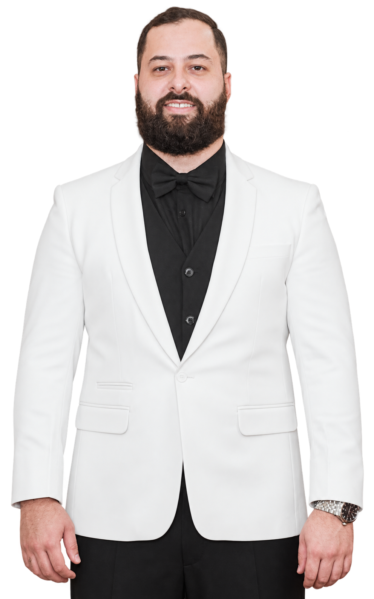

FELIPEBERNARDO.
Do conceito
ao clique.
Uma seleção de projetos dos quais participei.
Desafios diferentes. O mesmo cuidado com a experiência.

Felipe BernardoDESENVOLVEDOR & CURIOSO POR NATUREZA
Interfaces intuitivas.
Experiência única.
Atenção a cada detalhe.
Sou Felipe, desenvolvedor full stack. Transformo ideias em interfaces intuitivas e elegantes, conectando o cuidado visual à funcionalidade de cada projeto.
Atualmente, trabalho no Grupo Ribeiro Araujo, desenvolvendo sistemas web e mobile com PHP, Laravel, Filament, React, React Native e TypeScript. Integro APIs REST e MySQL, crio testes com Pest e utilizo Git e Docker no desenvolvimento. Gosto de colaborar, aprender e encontrar soluções que tornem o digital mais simples para quem usa.
Mais sobre minha trajetória ↗Em constante
evolução.
Experiência que conecta desenvolvimento,
colaboração e problemas reais.
OUT 2025 - ATUAL (CLT)Grupo Ribeiro AraujoDesenvolvedor Full Stack
Desenvolvimento e manutenção de sistemas e aplicações web e mobile utilizando PHP, Laravel, Filament, React e React Native.
Implementação de regras de negócio e APIs REST, integrando aplicações a bancos de dados relacionais com Laravel e MySQL. Criação de interfaces front-end responsivas e componentizadas com React, React Native, TypeScript, JavaScript, HTML5 e CSS3.
Testes automatizados: criação e manutenção de testes com Pest para aumentar a qualidade e a confiabilidade e reduzir regressões.
Docker: padronização dos ambientes de desenvolvimento. Uso de Git para versionamento de código e colaboração em equipe.
Aplicação de boas práticas de desenvolvimento, Clean Code e princípios de manutenibilidade, performance e escalabilidade.
JUN 2025 - ATUAL (FREELANCER)MW OnlineDesenvolvedor Front-end
Suporte a sistemas e desenvolvimento de novas funcionalidades, landing pages e sites institucionais.
MAR 2023 — AGO 2024 (PJ)Franquia ExtranetDesenvolvedor Full-Stack
Desenvolvimento de telas e funcionalidades para a plataforma de franquias. Colaboração com a equipe e avaliação da qualidade dos layouts, com foco na experiência dos franqueados.
MAR 2022 — MAI 2025 (PJ)FutradingDesenvolvedor Front-end
Desenvolvimento de plataforma de gerenciamento e venda de moedas virtuais do FIFA (EAFC). Interfaces orientadas a UX/UI que contribuíram para uma redução aproximada de 35% nos chamados ao suporte.
MAR 2021 — MAR 2022 (CLT)EdutecAnalista de sistemas
Suporte a software de gestão escolar e capacitação de mais de 15 profissionais. Participação ativa no fechamento de quatro novos clientes nos primeiros três meses.
As stacks por trás
das experiência.
INTERFACES & APLICAÇÕES
React ↗ Next.js ↗ TypeScript
JavaScript · React Native
HTML5 · CSS3
ESTILO & SISTEMAS VISUAIS
Tailwind CSS · Bootstrap
Figma · Storybook · Bit
INTEGRAÇÃO & COLABORAÇÃO
Laravel · PHP · Filament
MySQL · SQL · APIs REST
Pest · Git · Docker
ALGO JUNTOS?